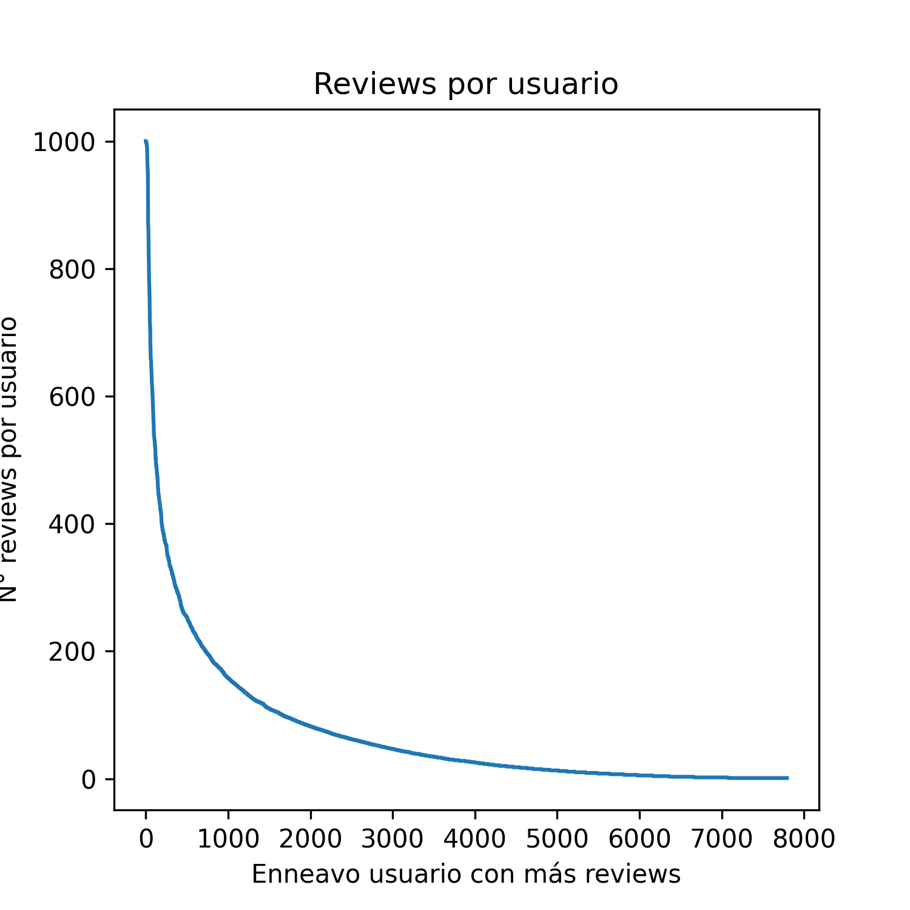
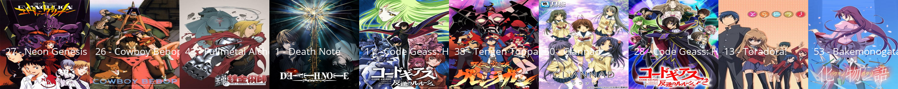
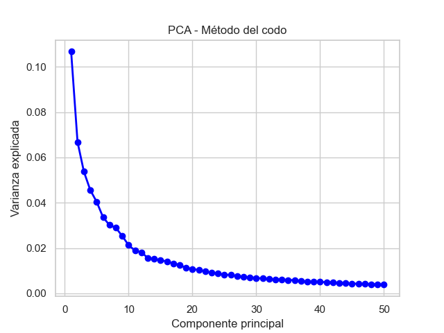
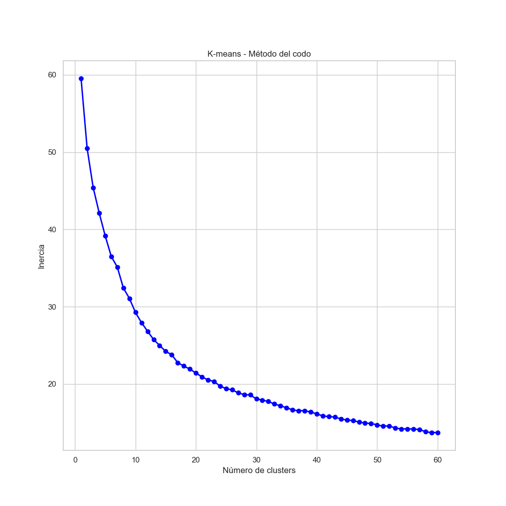
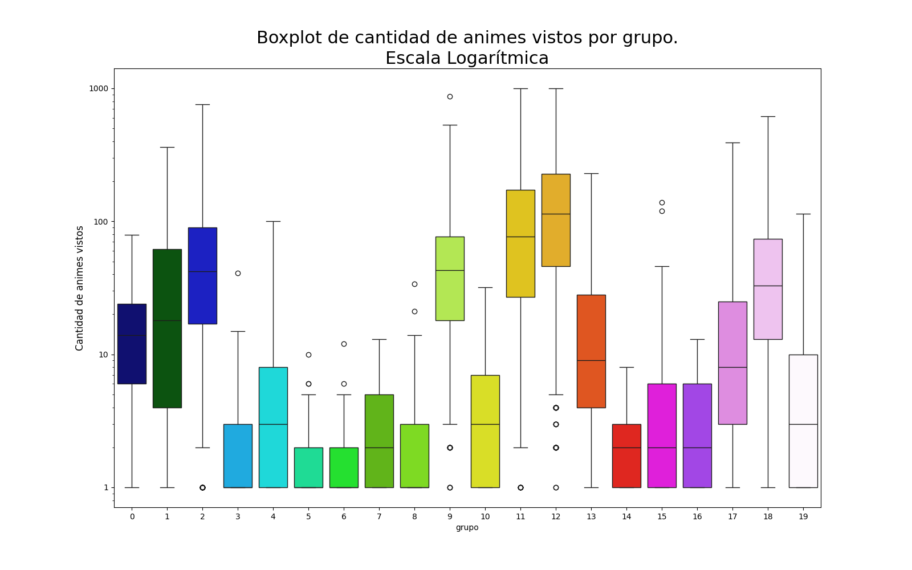
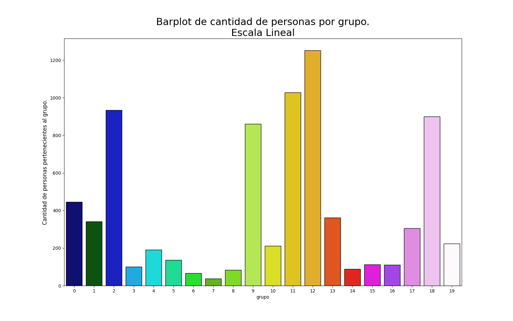

Proyecto de Ciencia de Datos, Grupo 12
Clustering de usuarios de MyAnimeList:
Hallando patrones y tendencias por comunidad
Motivación
A algunos podría parecerle extraña la idea de hacer un análisis de este tipo,
pero pensando que los adolescentes y jovenes adultos son su principal
consumidor, y que Chile es el quinto país que más consume anime,
(Ferjan, 2023),
hacer un proyecto en torno a algo que nos interesa a nosotros y al resto del
país resulta atractivo.
Otra de las razones es el potencial de la Ciencia de Datos en este entorno; no
debería ser un secreto que uno de los grandes mercados de la Ciencia de Datos
son los algoritmos de recomendación a usuarios, usados generalmente en
sitios de películas como Netflix, o en los distintos algoritmos de publicidad.
Esto es relevante en el anime pues uno de los sitios que los usuarios usan en
este grupo de interés es MyAnimeList, el cual cuenta con aproximadamente
17 millones de usuarios; esto representa una oportunidad, pues el mismo sitio
provee una API con la cual acceder a esta información, lo cual implica que
nosotros mismos seremos capaces de acceder a ella.
Pero no simplemente vamos a tratar de hacer un algoritmo de recomendación,
si no más bien, vamos a buscar distintos grupos dentro de este sitio, con lo cual
queremos ver si estos usuarios se encuentran polarizados en sus gustos.
Información recolectada
El proyecto lo desarollamos con Python en varios Jupyter Notebook, con
varias librerías especializadas en Ciencia de Datos, como Pandas, Numpy, Matplotlib,
sklearn, etc. Y otras librerías para manejar el webscraping y el uso de API's, como
requests y BeautifulSoup.
Para la recolección de información usamos requests y BeautifulSoup; debido a la
cantidad de tiempo que se toma recopilar la información lo hicimos por 20 partes
cada serie, con un total de 5 series; el tiempo de procesamiento fue probablemente
más de 100 horas en total considerando todas las series.
La información que recolectamos fue la siguiente:
- Las listas de calificaciones de 20 mil usuarios, de las cuales aproximadamente
7000 tenían al menos una calificación a un anime que hayan completado. Esto fue
hecho en 2 series, una para tener los usuarios y una segunda para obtener sus
calificaciones.
- Detalles de los animes calificados por los usuarios en MyAnimeList, como su id,
año de lanzamiento, cantidad de usuarios por ese anime, la calificación promedio,
etc...
- La información de los animes presentes en Anime-Planet, otro sitio que recopila
información de distintos animes; en este caso sacamos información de este sitio
debido a la mejor calidad de sus tags, también conocidos como géneros,
los cuales tenían una mayor variedad en cuanto a tipo; clasificando así mejor
los distintos animes.
Esta también fue hecha en 2 series, una para encontrar
todos los animes de Anime-Planet y una segunda para obtener las tags.
Una vez que recopilamos toda la información la recopilamos en archivos únicos
para su posterior procesamiento.
Procesamiento de información
Una vez recolectada esa información, pasamos a la parte de procesamiento, lo primero
que hicimos fue convertirla generalmente a formatos más amigables.
Por ejemplo:
- Las listas de calificaciones por usuario se convirtieron a la forma de una
matriz, llamada users_df, con el siguiente formato:
|
Anime_1 |
Anime_2 |
... |
| User_1 |
1 |
10 |
... |
| User_2 |
6 |
NaN |
... |
| ... |
... |
... |
... |
Donde cada columna representa un anime y cada fila un usuario, y cada valor es
la calificación que el usuario le dio, donde NaN significa que el usuario no lo
calificó, y en nuestro caso, también significa que no lo vio completo.
- Los detalles de los distintos animes se convirtieron a una tabla llamada
detalles_anime, no es apropiado nombrar a esta una matriz,
pues no es estrictamente numérica.
Para cada anime, contiene:
| Columna |
Descripción |
| id |
El id del anime |
| title |
El nombre del anime |
| main_picture |
la url hacia su imagen |
| alternative_titles |
nombres alternativos |
| start_date, end_date |
Fecha de inicio y de fin de la emisión respectivamente |
| synopsis |
Una breve descripción de la trama. |
| mean |
El promedio de calificaciones. |
| rank |
Su posicionamiento respecto a su promedio de calificación, el mean. |
| popularity |
Su posicionamiento respecto a la siguiente columna, num_list_users. |
| num_list_users |
Cuantos usuarios la tienen en su lista, hayan calificado o terminado de ver el anime, o no.
|
| num_scoring_users |
Cuantos usuarios la han calificado. |
| media_type |
Indica si fue emitido por television (TV), si para consumo directo en el hogar (OVA), si era
un
video musical (Music), si era una pelicula (Movie), etc... |
| status |
Indica si sigue o no en emisión. |
| num_episodes |
La cantidad de episodios. |
| start_season |
Año y temporada de emisión; en la industria del anime la temporada es una característica
importante. Se refiere a si salió en invierno, otoño, verano, primavera, además de
contener el año. |
| studios |
Las empresas, en este caso llamadas estudios, que estuvieron involucradas en la producción.
|
- La información de Anime-Planet también se procesó; utilizamos una base de datos
externa, la cual enlaza id's de MyAnimeList con las URL de Anime-Planet para
poder tener las id's en esta tabla; debido a esta unión entre ambos sitios,
esta matriz recibe el nombre de unified_df, sus columnas son:
| Columna |
Descripción |
| Anime |
El nombre del anime |
| URL |
La URL hacia ese anime en Anime-Planet |
| Tags |
Todas los tags que tiene el anime |
| Alts |
Nombres alternativos para el anime. |
| id |
La id que lo relaciona con MyAnimeList |
- unified_df en cierto punto del proyecto es transformada en una matriz,
provocando que sus columnas sean todos los tags de Anime-Planet y sus filas sean todos los
animes con los que estamos trabajando en el proyecto.
Esta tiene el siguiente formato:
|
Tag_1 |
Tag_2 |
... |
| Anime_1 |
1 |
0 |
... |
| Anime_2 |
0 |
1 |
... |
| ... |
... |
... |
... |
Donde cada columna representa un género/tag y cada fila un anime con su id
de MyAnimeList.
Por cada dato tiene un 0 indicando que el anime no
tiene ese tag o un 1 indicando que sí lo tiene.
- Finalmente, como las matrices users_df y unified_df ahora comparten
id's
de anime, podemos hacer una multiplicación matricial entre ambas respecto a este dato.
Esta nueva matriz, que representa los gustos de anime, se llama cluster_df, y es la que
será usada
para nuestra meta de agrupar usuarios.:
|
Tag_1 |
Tag_2 |
... |
| User_1 |
613 |
7 |
... |
| User_2 |
18 |
0 |
... |
| ... |
... |
... |
... |
Donde cada columna representa un género/tag y cada fila un usuario.
Por cada dato tiene la suma de calificaciones de animes que tenían ese tag.
Por ejemplo, el User_1 ve mucho anime, y da altas calificaciones, y por tanto
su puntaje en la tag_1 es de 613.
En cambio, la tag_2 es menos popular, y como User_2 no ha calificado mucho anime,
su puntaje es de 0.
Como queremos agrupar los usuarios por gustos, no queremos que ver mucho anime
cambie tu gusto, por tanto, normalizamos esta matriz tal que cada usuario sume 1 en
sus gustos, esto se hace dividiendo por la suma de sus gustos; queda entonces algo así:
|
Tag_1 |
Tag_2 |
... |
| User_1 |
0.6 |
0.007 |
... |
| User_2 |
0.4 |
0 |
... |
| ... |
... |
... |
... |
Análisis de información y resultados
Con estos distintos conjuntos de datos, empezamos a responder ciertas preguntas que
teníamos.
Ley de Pareto en los animes y usuarios.
La primera de estas que pudimos responder era sobre si los usuarios siguen la ley de
Pareto, la cual dice que el 80% de los efectos proviene del 20% de las causas.
En nuestro caso, la ley de Pareto diría que el 20% de los usuarios hace 80% de las
calificaciones, o que el 20% de los animes tienen el 80% de las calificaciones.
Simplemente calculando en users_df la cantidad de reviews hechas por
usuario, tuvimos el siguiente resultado.

Los resultados dicen:
El 20% de los usuarios tiene 387989 calificaciones, lo cual es un 69.53% del total.
El 80% de los usuarios tiene 170050 calificaciones, lo cual es un 30.47% del total.
Lo cual a pesar de no ser exactamente 80-20, sí es bastante cercano, especialmente tomando en
cuenta que nuestra recolección de información no podía tener más de 1000 animes por usuario.
Por tanto, podemos decir que la ley de Pareto se cumple en este caso.
Podemos probar a hacer lo mismo pero desde la perpectiva de los mismos animes.

Los resultados dicen:
El 20% de los animes tiene 479727 calificaciones, lo cual es un 85.97% del total.
El 80% de los animes tiene 78312 calificaciones, lo cual es un 14.03% del total.
Lo cual a pesar de no ser exactamente 80-20, sí es bastante cercano, especialmente tomando en
cuenta que nuestra recolección de información no podía tener más de 1000 animes por usuario.
Por tanto, podemos decir que la ley de Pareto se cumple en este caso.
Animes de culto
Lo segundo que pudimos hacer fue encontrar los distintos animes de culto, encontramos estadísticamente
este conjunto de animes, los cuales tienen la característica de ser antiguos pero populares.

Estos fueron encontrados con la información dentro de detalles_anime.
Generos más y menos correlacionados
Primero veamos los más correlacionados.
Géneros más
relacionados |
Género 1 |
Género 2 |
Porcentaje de
correlación |
| 1 |
BL |
Shounen-ai |
96.9% |
| 2 |
GL |
Shoujo-ai |
96.6% |
| 3 |
Earthquake |
Natural Disaster |
93.5% |
| 4 |
Running |
Track and Field |
81.6% |
| 5 |
Sentai |
Tokusatsu |
81.6% |
| 6 |
Kingdom Building |
Management |
78.3% |
| 7 |
Boarding House |
Neighbors |
76.7% |
| 8 |
Art |
Art School |
76.5% |
| 9 |
Adult Couples |
Mature Romance |
74.9% |
| 10 |
Flower Shop |
Plants |
70.7% |
Ahora los más antirrelacionados.
Géneros menos
relacionados |
Género 1 |
Género 2 |
Porcentaje de
correlación |
| 1 |
Based on a Manga |
Original Work |
-32.8% |
| 2 |
Based on a Light Novel |
Based on a Manga |
-23.3% |
| 3 |
Original Work |
Shounen |
-19.9% |
| 4 |
Action |
Slice of Life |
-19.7% |
| 5 |
Fantasy |
Sci Fi |
-18.1% |
| 6 |
Action |
Comedy |
-17.5% |
| 7 |
Based on a Manga |
Based on a Video Game |
-17.0% |
| 8 |
Seinen |
Shounen |
-16.2% |
| 9 |
Action |
Romance |
-15.5% |
| 10 |
Based on a Manga |
Based on a Visual Novel |
-14.5% |
Estos resultados fueron obtenidos con unified_df.
Clustering de usuarios
Finalmente, llegamos a la parte principal del proyecto, el clustering de usuarios.
Para esto, usamos la matriz cluster_df, la cual contiene los gustos de los usuarios.
Los resultados no son tan conclusivos, pero fuimos capaces de concluir que no solo las
comunidades de animes tienen distintos gustos, si no que también difieren en cantidad de
usuarios y su nivel de consumo de anime.
Para poder hacer esto, tuvimos que hacer una reducción de dimensionalidad junto con un
algoritmo de clustering; en este caso usamos PCA y KMeans respectivamente.


Por el método del codo pudimos concluir que lo óptimo fue usar 7 componentes
principales, y aproximadamente 20 grupos; aunque en retrospectiva un poco menos pudo
haber sido un poco más eficiente.
A pesar de usar 7 componentes princiapales, lo cual implicaría 7 dimensiones para poder visualizar, por la
naturaleza del Principal Component Analysis, los
primeros componentes son también los más significativos; por lo cual, fuimos capaces de graficar los 20
grupos en un gráfico 3D de todas formas.
Los gráficos van de esta forma:
- Pueden verse los distintos grupos unidos por líneas, que los llevan a distintos animes.
- Están categorizados numéricamente, pues algunos colores son difíciles de distinguir, sea por ejemplo el
5, 6, 7, 8, 9.
- Cada grupo tiene su propia breve descripción, separados por las siguientes 3 macro-categorias.
- Casual: Grupo que en promedio ha visto de 0 a 10 animes.
- Estándar: Grupo que en promedio ha visto de 10 a 50 animes.
- Acérrimo: Grupo que en promedio ve más de 50 animes.
- Debido a que algunos grupos cubren por encima otros, cada iteración, o nivel, aumenta la transparencia
de los grupos ya vistos.
-
Nótese que las imágenes tienen tal resolución que si se abren en una pestaña
nueva, se podrá hacer suficiente zoom como para poder ver los nombres de los
distintos animes de cada grupo.
Nivel 1

Nivel 2

Nivel 3

Nivel 4

También podemos ver cuántos animes ven en distintas métricas los disímiles grupos, con unos boxplot.

Y por otra parte podemos ver cuántos usuarios tiene cada grupo.

Finalmente, tenemos una tabla con los géneros más populares de cada grupo.
| Grupo |
Géneros más populares en orden |
| 0 |
Action, Shounen, Fantasy, Explicit Violence, Mature Themes, Drama, Horror, Dark Fantasy, Military, Overpowered Main Characters |
| 1 |
Comedy, Romance, School Life, Drama, Shounen, Fantasy, Action, Seinen, Slice of Life, Shoujo |
| 2 |
Drama, Action, Fantasy, Mature Themes, Shounen, Comedy, School Life, Romance, Supernatural, Violence |
| 3 |
Drama, Romance, School Life, Comedy, Supernatural, Seinen, School Club, Coming of Age, Opposites Attract, Body Swapping |
| 4 |
Action, Shounen, Comedy, Drama, Violence, School Life, Superpowers, Supernatural, Sci Fi, Swordplay |
| 5 |
Action, Shounen, Violence, Fantasy, Drama, Adventure, Mature Themes, Conspiracy, Mystery, Siblings |
| 6 |
Action, Shounen, Ninja, Drama, Revenge, Japanese Mythology, Orphans, Rivalries, Hand to Hand Combat, Fantasy |
| 7 |
Shounen, Sports, School Club, Tournaments, School Life, Volleyball, Animeism, Basketball, Comedy, Soccer |
| 8 |
Comedy, School Life, Shounen, Romance, Slice of Life, Seinen, Romantic Comedy, Based on a 4-Koma Manga, School Club, Ecchi |
| 9 |
Shounen, Action, Drama, Comedy, School Life, Supernatural, Mature Themes, Violence, Fantasy, Explicit Violence |
| 10 |
Psychological, Mature Themes, Sci Fi, Violence, Conspiracy, Thriller, Suicide, Drama, Action, Supernatural |
| 11 |
Action, Fantasy, Shounen, Comedy, Drama, Adventure, Violence, School Life, Sci Fi, Supernatural |
| 12 |
Comedy, Action, School Life, Shounen, Drama, Romance, Fantasy, Supernatural, Violence, Sci Fi |
| 13 |
Action, Shounen, Supernatural, Violence, Fantasy, Superpowers, Adventure, Drama, Comedy, Martial Arts |
| 14 |
Supernatural, Shounen, Psychological, Mystery, Overpowered Main Characters, Rivalries, Contemporary Fantasy, Mind Games, Urban Fantasy, Thriller |
| 15 |
Action, Sci Fi, Drama, Violence, Mecha, Superpowers, Comedy, Mature Themes, Post-apocalyptic, Nudity |
| 16 |
Action, Fantasy, Shounen, Explicit Violence, Dark Fantasy, Horror, Military, Outside World, Cannibalism, Isolated Society |
| 17 |
Drama, Romance, School Life, Shounen, Mature Themes, Action, Supernatural, Comedy, Violence, Melancholy |
| 18 |
Action, Shounen, Violence, Drama, Mature Themes, Fantasy, Sci Fi, Supernatural, Adventure, Explicit Violence |
| 19 |
Fantasy, Action, Magic, Adventure, Comedy, Person in a Strange World, Shounen, Isekai, Overpowered Main Characters, Violence |
Retroalimentación, retrospectiva, problemáticas, y posibles extensiones
Problemas con nuestras bases de datos
Uno de los problemas que encontramos fue el tiempo que se tarda en obtener la inforamación de los distintos sitios,
tardándose aproximadamente 100 horas con todas las requests que fueron necesarias, siendo unas 60.000 como mínimo,
tomando en cuenta usuarios, animes, y tags. Otro problema con los datos es la baja escalabilidad, pues si se tarda tanto en
obtener los usuarios, entonces hacer un millón de usuarios sería complicado, además hay que tener en cuenta
que una vez pase cierto tiempo la información estará desactualizada pues los usuarios
podrán haber modificado su lista de animes.
Otro problema, esta vez en el ámbito moral, es la invasión de privacidad que se estaría haciendo hacia los usuarios de MyAnimeList;
en general, esta es una temática constante cuando uno piensa en temas como la publicidad, o los algoritmos de recomendación, pues
estos utilizan tu información personal para poder darte recomendaciones personalizadas, y a algunos no les parece correcto que
información privada sea usada de esta manera. Sin embargo, con MyAnimeList no hay mucho
problema, pues los usuarios pueden hacer sus
listas privadas; esas listas no son accesibles usando Web-Scraping, y por tanto este
problema sería poco relevante realmente.
Por otro lado, un problema moral que sí es relevante es el uso de la información de Anime-Planet, pues este sitio tiene un sistema
agresivo para evitar el uso de Web-Scraping dentro de sus páginas. Este sistema si te detecta como usuario automático, un robot, en
el mejor de los casos te dice que tienes prohibido acceder a la información, y en el peor de los casos, te prohiben acceder más a la
página.
Debido a eso, tuvimos que pretender que somos un usuario normal y no un robot, lo cual podría entrar en problemáticas a nivel legal
si fuera a mayores; incluso podríamos prohibir el acceso de todo Chile a la página; a pesar de que no se llegó a tal punto.
Problemas con nuestro análisis
Es posible que nuestro análisis tenga ciertos errores, uno de ellos es el uso de multiplicación matricial en la creación de cluster_df.
No exactamente debido a que sea malo multiplicar matrices, si no porque quizás no fue necesario con lo que hicimos al final; si es verdad que pudimos encontrar
los tags asociados a cada uno de los grupos, en cambio, mostrar los animes de estos grupos llama más la atención que un montón de géneros que hay que leer.
A su vez, podríamos haber hecho PCA directamente con las ratings de usuarios y entonces haber hecho agrupamiento, para tener directamente los animes más
populares entre cada grupo.
Otro desafío radica en la impredecibilidad y la dificultad para agrupar usuarios, principalmente debido a que los
algoritmos de agrupamiento no siempre producen el mismo resultado. Además, encontrar el algoritmo más apropiado es un
proceso complejo. Aunque utilizamos KMeans con 7 dimensiones y 20 grupos, descubrimos que algoritmos similares, como
KernelPCA, que son más adecuados para información no lineal, podrían ofrecer resultados más efectivos.
Debido a esto, el agrupamiento es quizás la parte más debil de nuestro proyecto.
Sin embargo, a pesar de ser débil, sus resultados más importantes siguen siendo
relevantes, pues de todas maneras encontramos ciertos grupos significativamente
distintos, en un ejemplo, hay grupos que prefieren más romance, otros más la acción,
pero también hay algunos muy específicos, uno de ellos es el grupo 7, el de fans del
Spokon, un género muy cercano al baloncesto, o, en otro caso, el grupo 15, fans de los mechas, un género de anime que involucra robots gigantes que son piloteados por los protagonistas.
Ahora que se han mencionado las distintas problemáticas, es más sencillo hablar de cómo extender el trabajo.
Posibles extensiones
Junto con la información de calificaciones de usuarios a animes que completaron, también tenemos información sobre lo que planean ver en el futuro; esta información puede ser útil
si se quisiera hacer un algoritmo de recomendación, pues este podría entrenarse con lo
que los mismos usuarios desean ver a posteriori.
Encontrar un mejor modelo para el clustering, para lograr obtener grupos más significativos, y reducir los errores en las distintas métricas.
Fuentes de datos.
La mayoría de fuentes de datos vienen de simple Web-Scraping de MyAnimeList y Anime-Planet, sin embargo, fue usada la API de MyAnimeList, la cual requiere un token; una vez sea público el repositorio,
el token no será accesible, así que si se desea replicar el proyecto se tendrá que
crear su propio token.
Adicionalmente, para poder relacionar juntas las bases de datos de Anime-Planet con MyAnimeList, fue usada una base de datos externa que une las id's de
MyAnimeList con las URL de Anime-Planet; la base de datos se llama Anime Offline Database.
Repositorios
El proyecto cuenta con 2 repositorios, el que tiene el código, y el de la presentación,
una vez el código sea público será posible replicar el proyecto; aunque
es necesario mucho tiempo de espera para tener toda la información.